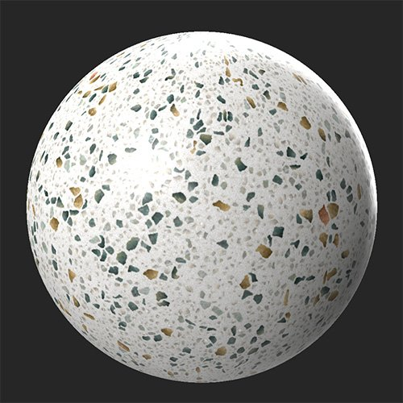
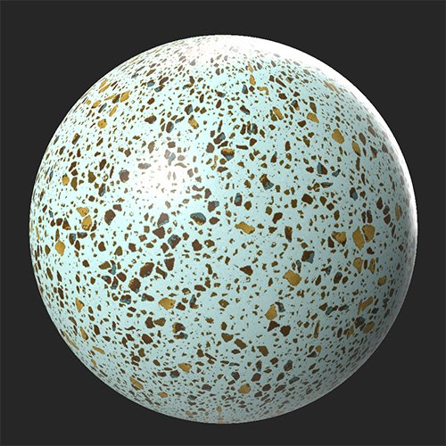

In: Adjustments
The Color Variation filter lets you replace multiple colors in the base color or diffuse channel at once. This is similar to the Color Replace filter, but while Color Variation lets you adjust multiple colors in one filter, Color Replace gives you more control over the mask used to replace colors, and can be used on multiple channels.
In the images below, the Color Variation filter has been used to adjust not only the underlying white color to make it appear a pale turquoise, but also to increase the contrast of many of the smaller specks.


Basic parameters
The Color Variation filter lets you quickly modify multiple colors of the base color channel at once. For some materials this can be useful for making small adjustments, but the Color Variation filter is best at completely overhauling the colors of your material with a single filter.
To use the Color Variation filter: